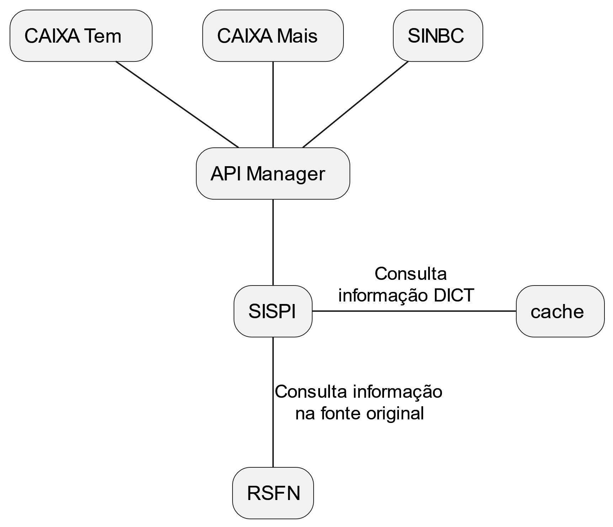
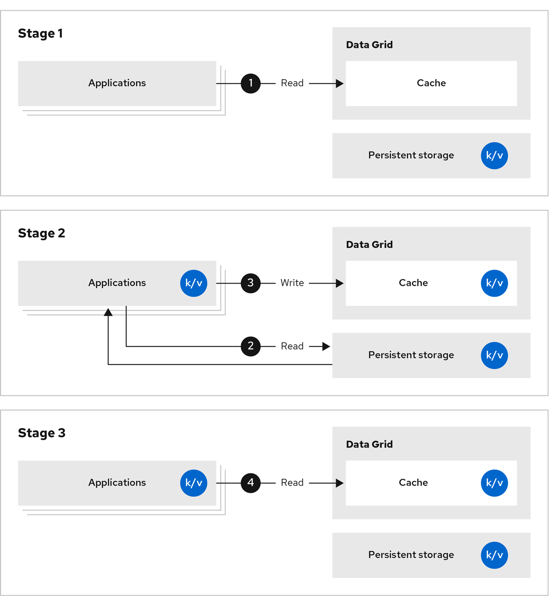

Cache replicado - SISPI (PIX)
A arquitetura de cache do SISPI é Replicated Cache:
-
Arquitetura em cluster aumenta a disponibilidade e capacidade de processamento.
-
Todos os nós apresentam cópia completa do cache. São cópias idênticas.
- Visto que todos os objetos do DICT BACEN podem ser armazenados num único nó de processamento;
-
Há requisito de desempenho de tempo de resposta de 100 milissegundos requerendo performance ótima em todos os nós de processamento.
- Todos os nós contêm todas as informações de modo que todos podem balancear a carga de processamento ao invés da carga de processamento ser balanceada somente entre a fração dos nós que contiverem as informações.
-
Deve-se atentar que o modo Replicated Cache requer uma quantidade elevada de recursos devido as réplicas idênticas.
-
Deve-se sempre analisar a possibilidade de outros modos como Distributed Cache.
-
Quantidade mínima de 3 instâncias para garantir durabilidade.
-
No SISPI (PIX), é realizado acesso constante ao Banco Central para recuperação de informações denominadas DICT.
-
As informações recuperadas podem ser reaproveitadas com validade inferior a N minutos (segundos/horas/etc); ou seja, expiram em N minutos (t);
- No qual N é no mínimo 1 minuto.
-
Existe rate limit [1] para quantidade de acessos ao Banco Central para recuperação das informações.
-
Tanto para acessos simultâneos quanto para volume de acessos em um intervalo de tempo.
-
Em um processo de rate limit que denominam bucket.
-
Há risco de falha no serviço (ausência de resposta do BACEN por rate limit), de multas e de sanções se não forem respeitadas as características do rate limit.
O cenário atende aos critérios identificados para uso de cache:
-
Existe informação que pode ser reaproveitada: informação DICT;
-
Existe potencial custo elevado: rate limit para quantidade de acessos ao Banco Central para recuperação das informações;
-
O resultado não se altera para operações subsequentes: informações DICT recuperadas podem ser reaproveitadas por até N segundos/minutos/horas/etc;
-
Em situações em que o custo da operação f(x) justifique a estrutura e em que a redução do custo apresenta resultado significativo: a ausência de estrutura de cache implica em indisponibilidade e/ou instabilidade quando o rate limit é excedido, pois os dados DICT ficam indisponíveis.
Desta forma, as informações DICT recuperadas do BACEN serão armazenadas em cache pelo período de tempo N (segundos/minutos/horas/etc).
-
Durante esse período, estarão disponíveis com baixo tempo de resposta.
- Aumentando o desempenho do sistema.
-
Não serão realizadas consultas desnecessárias ao BACEN.
-
Evitar-se-á alcançar os limites do rate limit.
- Evitando-se todos os impactos: sanções, etc.
-
O SIPSI apresentará maior disponibilidade e estabilidade.
- Anteriormente, as operações no SIPSI apresentavam falha quando o rate limit era excedido, pois os dados DICT ficavam indisponíveis.
-
-
O tempo de vida N da informação no cache deve ser definido negocialmente.
-
Por exemplo, pode ser definido tempo N padrão por tipo de informação DICT recuperada.
- Ou, um tempo N diferente para cada informação recuperada independentemente do tipo.
-
O tempo N deve ser o maior possível negocialmente de modo a maximizar o comportamento desejado do cache.
-
Um cache compartilhado de dados reduziria tanto o volume quanto a frequência de acesso por essas informações repetidas.

Características do cache
Recomendamos construção de ambiente com OKD 3.11 e Red Hat Data Grid 8.1.
-
Em vista da criticidade: necessidade de implantação imediata da solução em produção;
-
Apesar da recomendação do fornecedor, o OKD 4 ainda se encontra em fase de implantação.
-
Há ampla disponibilidade de OKD 3.11 no ambiente CAIXA.
-
Não obstante, deve-se explorar utilização futura de OKD 4 considerando as vantagens identificadas pelo fornecedor.
O cache compartilhado e replicado apresentará as seguintes características:
Tabela - Características do cache para o processo DICT BACEN
| Cache | |
|---|---|
| Ferramenta | Red Hat Data Grid |
| Cliente Data Grid | Java framework Quarkus com protocolo Hot Rod |
| Clustered Mode | Replicated cache |
| Disponibilidade | Mínimo 3 nós |
| Nodes | Mesma quantidade de Disponibilidade |
| Owners | Mesma quantidade de Nodes |
| Replication | Síncrona (blocante) para escrita inicial e assíncrona nas réplicas |
| Transaction | Write lock |
| Política de exclusão automática | Time aware least recently used |
-
Ferramenta: Red Hat Data Grid
-
Cliente Data Grid: somente pode ser desenvolvido em Java framework Quarkus [2] com protocolo Hot Rod.
- Configurações alternativas apresentaram desempenhos 10 vezes a 100 vezes inferiores em testes de stress.
-
Clustered Mode: Replicated Cache
-
Arquitetura em cluster aumenta a disponibilidade e capacidade de processamento/armazenamento.
-
Todos os nós apresentam cópia completa do cache. São cópias idênticas.
- Visto que todos os objetos do DICT BACEN podem ser armazenados num único nó de processamento;
-
Há requisito de desempenho de tempo de resposta de 100 milissegundos requerendo performance ótima em todos os nós de processamento.
- Todos os nós contêm todas as informações de modo que todos podem balancear a carga de processamento ao invés da carga de processamento ser balanceada somente entre a fração dos nós que contiverem as informações.
-
Deve-se atentar que o modo Replicated Cache requer uma quantidade elevada de recursos devido as réplicas idênticas.
- Deve-se sempre analisar a possibilidade de outros modos como Distributed Cache.
-

-
Disponibilidade
- Mínimo de 3 nós para alta disponibilidade
-
Nodes: 3
-
Em um Replicated Cache, representa o grau de tolerância a falhas.
-
Quantidade de réplicas completas dos objetivos no cluster.
-
Quantidade de servidores no cache distribuído.
-
-
Owners: 3
-
Em um Replicated Cache, representa o grau de tolerância a falhas.
- Deve ser igual ao número de Nodes.
-
-
Replication: síncrona com replicação assíncrona
-
Serviço do cache somente informa sucesso na escrita de objetos quando ocorrer a escrita síncrona no nó do cache que foi acessado.
-
Entretanto, as demais réplicas no cluster serão criadas de forma assíncrona.
-
-
Transaction: Write lock
- Serviço do cache garante que somente uma operação de escrita ocorre por vez para uma key (chave), ou seja, lock de escrita.
-
Política de exclusão automática: time aware least recently used (TLRU) [3] ou similar para tratamento de evento de cache "cheio".
- Exclusão automática de mensagens que ultrapassarem TTL de N minutos.
-
Balanceador de carga sem sticky bit
-
Por exemplo, balanceamento conexões por número/volume de conexões ou por tempo de resposta.
-
Todas as escritas no cache devem ser replicadas para o cluster todo de modo a garantir que leituras subsequentes sempre encontrem o valor armazenado.
-
Características do processo DICT BACEN:
-
Payload: total de 3.199 bytes.
-
Key: chave de 77 caracteres (bytes) [4]
-
Value: objeto texto em formato JSON com menos de 3,5 kibibytes (3 KiB e 500 bytes; ou, 3.122 bytes).
-
-
Tempo de vida: objetos podem ser removidos após 60 segundos.
-
Existe tolerância de cache MISS, mesmo que indesejável.
-
Cache MISS fallback para consulta ao banco de dados.
-
Cache não precisa ser persistente (as informações não precisam ser armazenadas em banco de dados).
-
-
Volume de acessos simultâneos.
-
500 consultas por segundo (simplificação do rate limit da API do BACEN DICT)
-
Fila com capacidade (profundidade): de 500 objetos com tempo de vida de 60 segundos = 500 * 60 = 30.000 objetos simultâneos
-
Fila com tamanho: de 30.000 objetos simultâneos com payload de 3.199 bytes = 30.000 * 3.199 = 95.970.000 bytes ou aproximadamente 91,5 mebibytes (91 MiB e 512 KiB).
-
-
Tempo de resposta
-
O menor que a estrutura de cache permitir
-
Inferior a 100 milissegundos (tempo de resposta da API do BACEN DICT)
-
Tabela - Características do processo DICT BACEN
| Características | |
|---|---|
| Payload (bytes) | 3.199 |
| Tempo de vida (segundos) | 60 |
| Tolerância a cache MISS | Sim |
| Fallback em cache MISS | Banco de dados |
| Objetos simultâneos em cache | 1.000 |
| Memória necessária para uma cópia completa do cache (mebibytes) (Data set size) | 91,5 |
| Tempo de resposta (tempo entre acesso ao cache e a resposta) (milissegundos) | < 100 |
Em testes realizados por Red Hat em laboratório para cenário descrito do DICT, foi alcançado desempenho de 7.786 requests/segundo com a seguinte configuração:
-
1.000 chaves distintas
-
TTL de 15 segundos
-
OKD 4 com Red Hat Data Grid 8
-
Java framework Quarkus com protocolo Hot Rod
-
1 pod
-
CPU: 2.000 millicores por pod
-
Memória: 2 gibibytes (GiB) por pod
-
Estimativa de sizing do cache
Estimaremos sizing de cada um do cache com as informações compiladas. Tratam-se de estimativas de configurações iniciais para construção das estruturas de cache conforme documentação "Red Hat Data Grid 8.4 - Data Grid Performance and Sizing Guide, 2023" [5].
Para definição definitiva das configurações, também devem-se considerar requisitos de desempenho. Bem como evoluções de uso com crescimento no volume de dados e crescimento no volume de acessos.
Deve-se considerar configuração de automatic scaling para atendimento dinâmico a necessidades do ambiente.
Estimativas iniciais de sizing do cache com as informações compiladas a seguir:
Tabela - Sizing para Red Hat Data Grid caches para o SIMTX
| Sizing | |
|---|---|
| Informação | Quantidade |
| Memória disponível por nó como definimos (mebibytes) | 1.250 |
| Payload (bytes) | 3.399 |
| Objetos simultâneos | 1.000 ou 6.426 utilizando 1.250 mebibytes |
| Tempo de vida (segundos) | 60 |
| Memória necessária para uma cópia completa do cache (mebibytes) (Data set size) | 195 |
| Quantidade mínima de réplicas por objeto como definimos (owners) | Mesma quantidade do número de nós |
| Memória necessária para o cache ajustada para quantidade de réplicas (mebibytes) (Distributed data set size) | 780 |
| Número mínimo de nós | 3 |
Segue tabela com as fórmulas para estimativa de sizing conforme documentação:
Tabela - Sizing, fórmulas para cálculo para Red Hat Data Grid caches
| Sizing | |
|---|---|
| Memória disponível para armazenamento por nó como definimos (mebibytes) (memória disponível) |  |
| Payload (bytes) | |
| Objetos simultâneos | |
| Tempo de vida (segundos) | |
| Memória necessária para uma cópia completa do cache (mebibytes) (Data set size) |  |
| Quantidade mínima de réplicas por objeto como definimos (owners) | |
| Memória necessária para o cache ajustada para quantidade de réplicas (Distributed data set size) |  |
| Número mínimo de nós |
-
CPU
- Recomendação do fabricante Red Hat de 4 CPUs por nó.
-
Memória disponível por nó
-
3 gibibytes conforme configuração do ambiente OKD do item 1.3.
-
De acordo com documentação do Red Hat Data Grid 8.4, JVM Heap deve ser configurado para ao menos o dobro do espaço requerido para os objetos do cache.
-
Logo, 1.500 mebibytes seria o tamanho máximo para armazenamento de objetos no cache por nó.
-
Entretanto, será ajustado para 1.250 mebibytes de tamanho máximo de armazenamento de objetos.
-
Desse modo, cada nó apresentará 512 mebibytes para uso interno do nó: overhead de JVM, memória alocada para shell script, etc.
-
O JVM Heap deverá ser configurado para ao menos 2.500 mebibytes.
-
-
-
| Sizing | |||
|---|---|---|---|
| Informação | Transação | ||
| Consultar | Validar | Pagar | |
| Memória disponível para armazenamento por nó como definimos (mebibytes) (memória disponível) | 1.250 | 1.250 | 1.250 |
-
Payload (objeto para cache)
-
É calculado com composição (soma) do tamanho da chave (key) e do valor (value).
-
Deve ser calculado payload médio detectado no ambiente real proposto.
- Caso contrário, o tamanho máximo possível.
-
Além da adição de overhead de 200 bytes por objeto (métrica do Red Hat Data Grid) em JVM Heap ou overhead de 60 bytes por objeto em memória "off-heap". Esses são valores aproximados de overhead. Valores precisos exigem análise de heap dumps em cada projeto específico.
-
-
Tamanho da chave em bytes MAIS tamanho do valor em bytes MAIS 200 bytes.
-
| Sizing | |
|---|---|
| Informação | Quantidade |
| Payload (bytes) | KEY + VALUE + 200 |
- Por exemplo, Key + Value = 77 + 3122 + 200 = 3.399 bytes.
| Sizing | |
|---|---|
| Informação | Quantidade |
| Payload (bytes) | 3.399 |
-
Memória necessária para uma cópia completa do cache (data set size)
-
Para estimativa da memória necessária e consequentemente da quantidade de nós necessários para o cluster, primeiro identificaremos quantos objetos simultâneos deverão estar disponíveis na memória.
-
Na ausência de quantidade negocial específica, utilizaremos a quantidade de objetos no pico de processamento.
-
| Sizing | |||
|---|---|---|---|
| Informação | Transação | ||
| Consultar | Validar | Pagar | |
| Objetos simultâneos | 1.000 | 1.000 | 1.000 |
-
Depois, analisaremos o tempo de vida dos objetos. Quanto objetos simultâneos deverão estar armazenados no cache, e por quanto tempo, para identificarmos a capacidade (profundidade).
- Por exemplo, TLL de 60 segundos com 1.000 objetos simultâneos resulta em capacidade de 60.000 objetos.
-
Consequentemente, podemos calcular o tamanho do cache mínimo necessário para armazenar essa quantidade de objetos. Ou seja, a memória necessária para armazenar uma cópia completa do cache. Iremos identificar esse valor como "data set size" para manter o padrão de nomenclatura da documentação oficial do produto.
| Sizing | |
|---|---|
| Informação | Quantidade |
| Memória necessária para uma cópia completa do cache (mebibytes) (Data set size) | Payload * ObjetosSimultaneos * TempoDeVida |
- Por exemplo, 60.000 objetos com payload 3.399 bytes resultam em 203.940.000 bytes; ou, 195 mebibytes.
| Sizing | |
|---|---|
| Informação | Quantidade Consultar Validar Pagar |
| Payload (bytes) | 3.399 |
| Objetos simultâneos | 1.000 |
| Tempo de vida (segundos) | 60 |
| Memória necessária para uma cópia completa do cache (mebibytes) (Data set size) | 195 |
-
A memória necessária, para execução do cache para 1.000 objetos é de 195 mebibytes, inferior a memória disponível por nó de 1.250 mebibytes para armazenamento de objetos.
-
A memória necessária para execução de qualquer um dos caches é inferior a memória disponível por nó.
-
Ou, podemos armazenar mais objetos simultâneos por nó.
- Por exemplo, (1250 mebibytes / 3399 bytes) / 60 segundos = 6426 objetos simultâneos.
-
Ou, deve-se investigar redimensionamento dos nós.
-
-
-
Tanto o tempo de vida quanto a quantidade de objetos simultâneos devem ser identificados de modo apropriado pela equipe de projeto visto o impacto direto na infraestrutura necessário e no desempenho da arquitetura de cache.
-
Número mínimo de nós para cluster Data Grid
-
Conforme documentação "Red Hat Data Grid 8.4 - Data Grid Performance and Sizing Guide, 2023", o número mínimo de nós para cada cache é dependente:
-
Do tamanho total de cache calculado acima (data set size);
-
Do número de réplicas mínimas para cada objeto;
-
Da memória disponível por nó para armazenamento de objetos (definidos como 1.250 mebibytes para esse case).
-
-
Para o case do SISPI, todos os nós são réplicas completas.
-
Desta forma, não são necessários nós adicionais para garantir que seja possível armazenar todo o cache.
-
Entretanto, nós adicionais permitem aumentam a resistência a falhas do cluster.
-
Foram definidos 3 owners para o cluster do SISPI, logo 3 nós.
-
-
Configuração do ambiente OKD Red Hat Data Grid
Arquivo YAML de configuração do ambiente OKD Red Hat Data Grid do SISPI em Produção.
Códigos fonte disponíveis em:
http://fontes.caixa / SUART / arquiteturas-de-referencia / quickstarts / dados / cache-in-memory [6]
apiVersion: template.openshift.io/v1
kind: Template
metadata:
name: rhdg8-monitoring
annotations:
description: Template to deploy a RHDG 8 cluster on OCP without the need of an operator. Bear in mind that this template is for testing purposes and that the installation made with it will not benefit from any kind of Red Hat support.
tags: infinispan,datagrid
iconClass: icon-datagrid
openshift.io/provider-display-name: Red Hat, Inc.
openshift.io/support-url: https://access.redhat.com
objects:
- apiVersion: v1
kind: Secret
metadata:
name: ${CLUSTER_NAME}-credentials
labels:
app: ${CLUSTER_NAME}
type: middleware
type: Opaque
stringData:
identities.yaml: |-
credentials:
- username: developer
password: [informa senha]
roles:
- admin
- username: operator
password: operator
roles:
- admin
- username: prometheus
password: prometheus
roles:
- admin
- apiVersion: v1
kind: Service
metadata:
annotations:
description: Provides a service for accessing the application over Hot Rod protocol.
labels:
app: ${CLUSTER_NAME}
clusterName: ${CLUSTER_NAME}
metrics: "yes"
name: ${CLUSTER_NAME}
spec:
ports:
- name: hotrod
port: 11222
protocol: TCP
targetPort: 11222
selector:
app: ${CLUSTER_NAME}
clusterName: ${CLUSTER_NAME}
sessionAffinity: None
type: ClusterIP
- apiVersion: v1
kind: Service
metadata:
annotations:
description: Provides a ping service for clustered applications.
labels:
app: ${CLUSTER_NAME}
clusterName: ${CLUSTER_NAME}
name: ${CLUSTER_NAME}-ping
spec:
clusterIP: None
ports:
- name: ping
port: 7800
protocol: TCP
targetPort: 7800
selector:
app: ${CLUSTER_NAME}
clusterName: ${CLUSTER_NAME}
sessionAffinity: None
type: ClusterIP
- apiVersion: route.openshift.io/v1
kind: Route
metadata:
labels:
app: ${CLUSTER_NAME}
clusterName: ${CLUSTER_NAME}
name: ${CLUSTER_NAME}-external
spec:
to:
kind: Service
name: rhdg
weight: 100
wildcardPolicy: None
- kind: ConfigMap
apiVersion: v1
metadata:
labels:
app: ${CLUSTER_NAME}
clusterName: ${CLUSTER_NAME}
name: ${CLUSTER_NAME}-configuration
data:
infinispan.yaml: |
clusterName: ${CLUSTER_NAME}
jgroups:
transport: tcp
dnsPing:
query: ${CLUSTER_NAME}-ping.${NAMESPACE_NAME}.svc.cluster.local
diagnostics: false
keystore:
path: ""
password: ""
alias: ""
xsite:
address: ""
name: ""
port: 0
backups: []
logging:
categories: {}
- apiVersion: apps/v1
kind: StatefulSet
metadata:
labels:
app: ${CLUSTER_NAME}
template: infinispan-ephemeral
name: ${CLUSTER_NAME}
spec:
podManagementPolicy: OrderedReady
replicas: 3
revisionHistoryLimit: 10
selector:
matchLabels:
app: ${CLUSTER_NAME}
clusterName: ${CLUSTER_NAME}
serviceName: ""
template:
metadata:
labels:
app: ${CLUSTER_NAME}
clusterName: ${CLUSTER_NAME}
spec:
affinity:
podAntiAffinity:
preferredDuringSchedulingIgnoredDuringExecution:
- podAffinityTerm:
labelSelector:
matchLabels:
app: ${CLUSTER_NAME}
clusterName: ${CLUSTER_NAME}
topologyKey: kubernetes.io/hostname
weight: 100
containers:
- env:
- name: CONFIG_PATH
value: /etc/config/infinispan.yaml
- name: IDENTITIES_PATH
value: /etc/security/identities.yaml
- name: JAVA_OPTIONS
value: -Xlog:gc*=info:file=/tmp/gc.log:time,level,tags,uptimemillis:filecount=10,filesize=1m -XX:-UseParallelOldGC -XX:+UseG1GC -XX:MaxGCPauseMillis=400
- name: EXTRA_JAVA_OPTIONS
value: -Xlog:gc*=info:file=/tmp/gc.log:time,level,tags,uptimemillis:filecount=10,filesize=1m -XX:-UseParallelOldGC -XX:+UseG1GC -XX:MaxGCPauseMillis=400
- name: DEFAULT_IMAGE
value: docker-registry.default.svc:5000/openshift/datagrid-8-rhel8:1.2
- name: USER
value: admin
- name: PASS
value: redhat
image: docker-registry.default.svc:5000/openshift/datagrid-8-rhel8:1.2
imagePullPolicy: IfNotPresent
livenessProbe:
failureThreshold: 5
httpGet:
path: rest/v2/cache-managers/default/health/status
port: 11222
scheme: HTTP
initialDelaySeconds: 10
periodSeconds: 60
successThreshold: 1
timeoutSeconds: 80
name: infinispan
ports:
- containerPort: 7800
name: ping
protocol: TCP
- containerPort: 11222
name: hotrod
protocol: TCP
readinessProbe:
failureThreshold: 5
httpGet:
path: rest/v2/cache-managers/default/health/status
port: 11222
scheme: HTTP
initialDelaySeconds: 10
periodSeconds: 10
successThreshold: 1
timeoutSeconds: 80
resources:
limits:
cpu: "2"
memory: 3Gi
requests:
cpu: "1"
memory: 3Gi
terminationMessagePath: /dev/termination-log
terminationMessagePolicy: File
volumeMounts:
- mountPath: /etc/config
name: config-volume
- mountPath: /etc/security
name: identities-volume
- mountPath: /opt/infinispan/server/data
name: pvc-rhdg-prd
dnsPolicy: ClusterFirst
restartPolicy: Always
schedulerName: default-scheduler
securityContext: {}
terminationGracePeriodSeconds: 30
volumes:
- configMap:
defaultMode: 420
name: rhdg-configuration
name: config-volume
- name: identities-volume
secret:
defaultMode: 420
secretName: rhdg-credentials
updateStrategy:
type: RollingUpdate
volumeClaimTemplates:
- apiVersion: v1
kind: PersistentVolumeClaim
metadata:
creationTimestamp: null
name: [nome do pvc]
ownerReferences:
- apiVersion: infinispan.org/v1
blockOwnerDeletion: false
controller: true
kind: Infinispan
name: [nome do pvc]
uid: 07e941f7-ec58-4442-8382-5df3f79ceca8
spec:
accessModes:
- ReadWriteOnce
resources:
requests:
storage: 30Gi
volumeMode: Filesystem
##
# The following configuration is to set monitoring with Prometheus
# Secret + ServiceMonitor
##
- apiVersion: v1
kind: Secret
metadata:
name: ${CLUSTER_NAME}-monitoring-credentials
labels:
type: middleware
app: ${CLUSTER_NAME}
clusterName: ${CLUSTER_NAME}
type: Opaque
stringData:
username: prometheus
password: prometheus
- apiVersion: monitoring.coreos.com/v1
kind: ServiceMonitor
metadata:
labels:
k8s-app: prometheusa
jirakey: one
name: datagrid-${CLUSTER_NAME}-monitoring
spec:
# Docu: https://github.com/prometheus-operator/prometheus-operator/blob/master/Documentation/api.md#servicemonitor
endpoints:
- targetPort: 11222
path: /metrics
honorLabels: true
basicAuth:
username:
key: username
name: ${CLUSTER_NAME}-monitoring-credentials
password:
key: password
name: ${CLUSTER_NAME}-monitoring-credentials
interval: 30s
scrapeTimeout: 10s
scheme: http
# tlsConfig:
# insecureSkipVerify: true
# serverName: ${CLUSTER_NAME}
# Docu: https://github.com/prometheus-operator/prometheus-operator/blob/master/Documentation/api.md#relabelconfig
# metricRelabelings:
# - sourceLabels: [clusterName]
# targetLabel: bu_code
# regex: (.*)
# replacement: ${1}
# action: replace
selector:
matchLabels:
app: ${CLUSTER_NAME}
clusterName: ${CLUSTER_NAME}
metrics: "yes"
targetLabels:
- clusterName
parameters:
- name: CLUSTER_NAME
description: "The name of the RHDG cluster."
required: false
value: "rhdg"
- name: NAMESPACE_NAME
description: "The name of the RHDG cluster."
required: false
value: "[nome do namespace]"
Código de exemplo do SISPI
Código fonte Java do cliente SISPI para acesso ao Red Hat Data Grid com cache de informações DICT BACEN, utilizando Java framework Quarkus, está disponível em fontes.caixa . Incluindo configuração Docker que pode ser utilizada com OKD/OpenShift.
Códigos fonte disponíveis em:
http://fontes.caixa / SUART / arquiteturas-de-referencia / quickstarts / dados / cache-in-memory [6]
No projeto, adicionar dependência no pom.xml para cliente Infinispan com Java framework Quarkus.
<!-- cache com datagrid -->
<dependency>
<groupId>io.quarkus</groupId>
<artifactId>quarkus-infinispan-client</artifactId>
</dependency>
Adicionar em application.properties somente para criar as entries. Os valores serão sobrescritos pela esteira Devops no momento do Release.
SISPI.DICT.CACHE.HOST=
SISPI.DICT.CACHE.PORTA=
SISPI.DICT.CACHE.USUARIO=
SISPI.DICT.CACHE.SENHA=
SISPI.DICT.CACHE.NOME.CACHE=sispi-consulta-chaves
SISPI.DICT.CACHE.TIMEOUT=1000
Adicionar em Library os valores que irão sobrescrever o application.properties. Os valores exemplificam o projeto SISPI. Devem ser substituídos de modo apropriado para outros projetos.
_ENV.SISPI.DICT.CACHE.HOST => rhdg.sispi-tqs.svc
_ENV.SISPI.DICT.CACHE.PORTA => 11222
_ENV.SISPI.DICT.CACHE.TIMEOUT => 1000
_ENV.SISPI.DICT.CACHE.USUARIO => <verificar com suporte>
_SECRET.SISPI.DICT.CACHE.SENHA => <verificar com suporte>
Classe InfinispanClient que realiza acesso ao Red Hat Data Grid utilizando Java framework Quarkus e protocolo Hot Rod.
package br.gov.caixa.sispi.dict.client;
import br.gov.caixa.sispi.dict.utils.SystemProperties;
import lombok.extern.slf4j.Slf4j;
import org.infinispan.client.hotrod.RemoteCacheManager;
import org.infinispan.client.hotrod.configuration.ClientIntelligence;
import org.infinispan.client.hotrod.configuration.ConfigurationBuilder;
import javax.annotation.PostConstruct;
import javax.annotation.PreDestroy;
import javax.enterprise.context.ApplicationScoped;
import javax.enterprise.context.RequestScoped;
import javax.inject.Inject;
@ApplicationScoped
@Slf4j
public class InfinispanClient {
RemoteCacheManager rmc;
private static final int PORTA_DEFAULT = 11222;
private static final int TIMEOUT_DEFAULT = 1000;
@Inject
SystemProperties propriedades;
@PostConstruct
public void init() {
try{
this.rmc = new RemoteCacheManager(new ConfigurationBuilder()
.addServer()
.host(propriedades.getHostCache())
.port(getPorta())
.clientIntelligence(ClientIntelligence.BASIC)
.connectionTimeout(getTimeout())
.socketTimeout(getTimeout())
.security()
.authentication()
.username(propriedades.getUsuarioCache())
.password(propriedades.getSenhaCache()).build());
} catch(Exception e) {
log.error("Falha ao conectar no Infinispan", e);
}
}
private Integer getPorta() {
try{
return Integer.valueOf(propriedades.getPortaCache());
} catch(Exception e){
return PORTA_DEFAULT;
}
}
private int getTimeout() {
try{
return Integer.valueOf(propriedades.getTimeoutCache());
} catch(Exception e) {
return TIMEOUT_DEFAULT;
}
}
@PreDestroy
public void destroy() {
if(this.rmc != null) {
this.rmc.close();
}
}
public RemoteCacheManager getRmc() {
return rmc;
}
}
Classe CacheChaveMemoriaService que gerencia os objetos no cache incluindo protocolo Hot Rod e design pattern Circuit Breaker [7].
package br.gov.caixa.sispi.dict.service;
import br.gov.caixa.sispi.dict.client.InfinispanClient;
import br.gov.caixa.sispi.dict.utils.SystemProperties;
import lombok.extern.slf4j.Slf4j;
import org.eclipse.microprofile.faulttolerance.CircuitBreaker;
import org.eclipse.microprofile.faulttolerance.Fallback;
import org.infinispan.client.hotrod.RemoteCache;
import org.infinispan.client.hotrod.RemoteCacheManager;
import org.junit.jupiter.api.Timeout;
import javax.annotation.PostConstruct;
import javax.enterprise.context.RequestScoped;
import javax.inject.Inject;
import java.util.Optional;
import java.util.concurrent.TimeUnit;
@Slf4j
@RequestScoped
public class CacheChaveMemoriaService implements ICacheService{
RemoteCache<String, String> cache;
@Inject
SystemProperties propriedades;
@Inject
InfinispanClient client;
@PostConstruct
public void init() {
this.cache = build();
}
@Fallback(fallbackMethod = "fallbackSet")
@Timeout(100)
@CircuitBreaker(requestVolumeThreshold = 10)
public void set(String chave, String conteudo, Long duracao) {
if(cache != null) {
try{
Long inicio = System.currentTimeMillis();
log.debug("Informacao adicionada no cache. Chave {} Conteudo {} Duracao {}", chave, conteudo, duracao);
cache.put(chave, conteudo, duracao, TimeUnit.SECONDS);
log.info("Demorou {} ms para gravar dados no cache", System.currentTimeMillis() - inicio);
} catch(Exception e) {
log.error("Falha ao gravar informação no cache", e);
throw e;
}
}
}
@Fallback(fallbackMethod = "fallbackGet")
@Timeout(100)
@CircuitBreaker(requestVolumeThreshold = 10)
public Optional<String> get(String chave) {
if(cache == null) {
return Optional.empty();
}
try{
Long inicio = System.currentTimeMillis();
Optional<String> chaveDoCache = Optional.ofNullable((String) cache.get(chave));
Long duracao = System.currentTimeMillis() - inicio;
log.info("Demorou {} ms para recuperar dados do cache", duracao);
return chaveDoCache;
} catch (Exception e) {
log.error("Falha ao recuperar informação no cache", e);
throw e;
}
}
public Optional<String> fallbackGet(String chave) {
log.warn("[fallbackGet] Cache apresentando falha. Utilizando método fallback para o get");
return Optional.empty();
}
public void fallbackSet(String chave, String conteudo, Long duracao) {
log.warn("[fallbackSet] Cache apresentando falha. Utilizando método fallback para o set");
}
private RemoteCache<String, String> build() {
try{
RemoteCacheManager rmc = client.getRmc();
rmc.start();
return rmc.getCache(propriedades.getNomeCache());
} catch(Exception e) {
log.error("Failure to get remote instance cache", e);
return null;
}
}
}
Código de exemplo para acesso a API Infinispan/Data Grid
Código de exemplo completo acessando API Infinispan/Data Grid utilizando Java framework Quarkus está disponível em fontes.caixa . Incluindo configuração Docker que pode ser utilizada com OKD/OpenShift.
Esse é um código genérico disponibilizado gratuitamente por Osvaldo Melo [9] em um repositório público em GitHub.com [10]
Segue a principal classe Java de código de exemplo para acesso a API Infinispan/Data Grid utilizando Java framework Quarkus e protocolo Hot Rod. Esse código de exemplo faz uso de Apache Camel [11], mas a solução não exige seu uso.
package redhat.com.routeBuilder;
import org.apache.camel.Exchange;
import org.apache.camel.ExchangePattern;
import org.apache.camel.builder.RouteBuilder;
import org.apache.camel.model.rest.RestBindingMode;
import org.apache.camel.component.jackson.JacksonDataFormat;
import org.apache.camel.component.infinispan.InfinispanConstants;
import org.apache.camel.component.infinispan.InfinispanOperation;
import com.redhat.models.Key;
import com.redhat.processors.TimerProcessor;
import org.apache.camel.LoggingLevel;
import java.time.Duration;
import java.time.Instant;
import java.util.concurrent.TimeUnit;
public class ApiRouteBuilder extends RouteBuilder{
protected String REST_API = "{{quarkus.openshift.env.vars.rest-api}}";
protected String CACHE_NAME = "{{quarkus.openshift.env.vars.cache-name}}";
@Override
public void configure() throws Exception {
//REST and Open API configuration
restConfiguration().bindingMode(RestBindingMode.json)
.component("platform-http")
.dataFormatProperty("prettyPrint", "true")
.contextPath("/").port(8080)
.apiContextPath("/openapi")
.apiProperty("api.title", "Camel Quarkus Infinispan API Demo")
.apiProperty("api.version", "1.0.0-SNAPSHOT")
.apiProperty("cors", "true")
;
//REST methods configuration
rest().tag("API Demo using Camel and Quarkus with API or Infinispan Cache")
.produces("application/json")
.get("/keys/{key}")
.description("Gets a Key from API or Cache from code")
.route().routeId("getKey")
.log("Called findByKey API")
.to("direct:mainRoute")
.endRest()
;
// Route of Main flow
from("direct:mainRoute").routeId("mainRoute").streamCaching()
.to("direct:circuitbreaker");
// Route with Circuit Breaker Pattern
from("direct:circuitbreaker").routeId("circuitbreaker")
.circuitBreaker()
.setHeader(InfinispanConstants.OPERATION).constant(InfinispanOperation.CONTAINSKEY)
.setHeader(InfinispanConstants.KEY,simple("${header.key}"))
.to("infinispan:" + CACHE_NAME)
.setHeader("InfinispanContainsKeyResult",simple("${body}"))
//.log("Request to circuit breaker: ${headers} ${body}")
.to("direct:cache")
.onFallback()
.to("direct:getFromRestApi")
.end()
;
//if result is not present on cache, search on API and put on cache for futures requests
from("direct:cache").routeId("cache")
.choice()
// if exists on cache
.when().simple("${header.InfinispanContainsKeyResult} == 'true'")
.setHeader(InfinispanConstants.OPERATION).constant(InfinispanOperation.GET)
.setHeader(InfinispanConstants.KEY,simple("${header.key}"))
// .log("Request to choice: ${headers} ${body}")
.setHeader("startTimer", simple(String.valueOf(System.nanoTime())))
.to("infinispan:" + CACHE_NAME)
.setHeader("stopTimer", simple(String.valueOf(System.nanoTime())))
.process(new TimerProcessor())
.log("Time to get from cache: "+ "${header.timer}")
.unmarshal(new JacksonDataFormat(Key.class))
.setBody(simple("${body}"))
.endChoice()
// if not exists on cache
.otherwise()
.to("direct:getFromRestApi")
.setHeader(InfinispanConstants.OPERATION).constant(InfinispanOperation.PUT)
.setHeader(InfinispanConstants.KEY,simple("${header.key}"))
.marshal().json()
.setHeader(InfinispanConstants.VALUE, simple("${body}"))
.setHeader(InfinispanConstants.LIFESPAN_TIME, simple("${header.lifespantimeseconds}"))
.setHeader(InfinispanConstants.LIFESPAN_TIME_UNIT,simple(TimeUnit.SECONDS.toString()))
.setHeader(InfinispanConstants.MAX_IDLE_TIME, simple("${header.lifespantimeseconds}"))
.setHeader(InfinispanConstants.MAX_IDLE_TIME_UNIT, simple(TimeUnit.SECONDS.toString()))
.setHeader("startTimer", simple(String.valueOf(System.nanoTime())))
.to("infinispan:" + CACHE_NAME)
.setBody(simple("${header.CamelInfinispanValue}"))
.setHeader("stopTimer", simple(String.valueOf(System.nanoTime())))
.process(new TimerProcessor())
.log("Time to put on cache: "+ "${header.timer}")
.unmarshal(new JacksonDataFormat(Key.class))
.setBody(simple("${body}"))
.endChoice();
//Route gets object from Rest API
from("direct:getFromRestApi").routeId("getFromRestApi")
.setHeader("key", simple("${header.key}"))
//.log("Request to API : ${headers} ${body}")
.to("rest:get:/keys/{key}?host=" + REST_API)
//.log("Response from API: ${headers} ${body}")
.unmarshal(new JacksonDataFormat(Key.class))
.setBody(simple("${body}"))
;
}
}
Referências
| [1] | WIKIMEDIA FOUNDATION, INC. ET AL. Rate limiting. Wikipedia, 30 dez. 2021. Disponível em: <http://web.archive.org/web/20220530151958/https://en.wikipedia.org/wiki/Rate_limiting>. Acesso em: 30 maio 2022. |
|---|---|
| [2] | WIKIMEDIA FOUNDATION, INC. ET AL. Quarkus. Wikipedia, 22 ago. 2022. Disponível em: <http://web.archive.org/web/20220823153345/https://en.wikipedia.org/wiki/Quarkus>. Acesso em: 23 ago. 2022. |
| [3] | WIKIMEDIA FOUNDATION, INC. ET AL. Cache replacement policies. Wikipedia, 23 maio 2022. Disponível em: <http://web.archive.org/web/20220602011929/https://en.wikipedia.org/wiki/Cache_replacement_policies>. Acesso em: 02 jun. 2022. |
| [4] | WIKIMEDIA FOUNDATION, INC. ET AL. Byte. Wikipedia, 03 jun. 2022. Disponível em: <http://web.archive.org/web/20220608014918/https://en.wikipedia.org/wiki/Byte>. Acesso em: 08 jun. 2022. |
| [5] | RED HAT, INC. Red Hat Data Grid 8.4 | Data Grid Performance and Sizing Guide. Red Hat Customer Portal, 2023. Disponível em: <http://web.archive.org/web/20230216195710/https://access.redhat.com/documentation/en-us/red_hat_data_grid/8.4/html-single/data_grid_performance_and_sizing_guide/index>. Acesso em: 16 fev. 2023. |
| [6] | CAIXA ECONÔMICA FEDERAL. arquiteturas-de-referencia / quickstarts / dados / cache-in-memory. fontes.caixa, 2023. Disponível em: <http://fontes.des.caixa/suart/arquiteturas-de-referencia/quickstarts/dados/-/tree/main/cache-in-memory>. Acesso em: 28 mar. 2023. |
| [7] | WIKIMEDIA FOUNDATION, INC. ET AL. Circuit breaker design pattern. Wikipedia, 23 jan. 2023. Disponível em: <http://web.archive.org/web/20230130120430/https://en.wikipedia.org/wiki/Circuit_breaker_design_pattern>. Acesso em: 30 jan. 2023. |
| [8] | MELO, O. arquiteturas-de-referencia / quickstarts / dados / camel-quarkus-infinispan-api. fontes.caixa, 2023. Disponível em: <http://fontes.des.caixa/suart/arquiteturas-de-referencia/quickstarts/dados/-/tree/main/camel-quarkus-infinispan-api>. Acesso em: 28 mar. 2023. |
| [9] | MELO, O. Project camel-quarkus-infinispan-api. GitHub: Let's build from here, 2022. Disponível em: <https://github.com/osvaldormelo/camel-quarkus-examples/tree/main/camel-quarkus-infinispan-api>. Acesso em: 17 nov. 2022. |
| [10] | GITHUB, INC. About · GitHub. GitHub, 2023. Disponível em: <http://web.archive.org/web/20230217144219/https://github.com/about>. Acesso em: 17 fev. 2023. |
| [11] | THE APACHE SOFTWARE FOUNDATION. Apache Camel, 2023. Disponível em: <http://web.archive.org/web/20230203215419/https://camel.apache.org/>. Acesso em: 03 fev. 2023. |
| [12] | WIKIMEDIA FOUNDATION, INC. ET AL. Time to live. Wikipedia, 09 fev. 2022. Disponível em: <http://web.archive.org/web/20220525090804/https://en.wikipedia.org/wiki/Time_to_live>. Acesso em: 25 maio 2022. |
| [13] | WIKIMEDIA FOUNDATION, INC. ET AL. Database caching. Wikipedia, 24 mar. 2022. Disponível em: <http://web.archive.org/web/20220403044948/https://en.wikipedia.org/wiki/Database_caching>. Acesso em: 03 abr. 2022. |
| [14] | WIKIMEDIA FOUNDATION, INC. ET AL. Scalability - Horizontal and vertical scaling. Wikipedia, 07 maio 2022. Disponível em: <http://web.archive.org/web/20220514132248/https://en.wikipedia.org/wiki/Scalability#Horizontal_(scale_out)_and_vertical_scaling_(scale_up)>. Acesso em: 14 maio 2022. |
| [15] | WIKIMEDIA FOUNDATION, INC. ET AL. Distributed cache. Wikipedia, 21 fev. 2022. Disponível em: <http://web.archive.org/web/20220511131635/https://en.wikipedia.org/wiki/Distributed_cache>. Acesso em: 11 maio 2022. |
| [16] | WIKIMEDIA FOUNDATION, INC. ET AL. Key--value database. Wikipedia, 23 abr. 2022. Disponível em: <http://web.archive.org/web/20220531010718/https://en.wikipedia.org/wiki/Key%E2%80%93value_database>. Acesso em: 31 maio 2022. |
| [17] | WIKIMEDIA FOUNDATION, INC. ET AL. Latency (engineering). Wikipedia, 26 fev. 2022. Disponível em: <http://web.archive.org/web/20220531021919/https://en.wikipedia.org/wiki/Latency_(engineering)>. Acesso em: 31 maio 2022. |
| [18] | WIKIMEDIA FOUNDATION, INC. ET AL. Openshift. Wikipedia, 19 abr. 2022. Disponível em: <http://web.archive.org/web/20220423134519/https://en.wikipedia.org/wiki/OpenShift>. Acesso em: 23 abr. 2022. |
| [19] | RED HAT, INC. Red Hat Data Grid 8.3 | Setting up Data Grid services. Red Hat Customer Portal, 2022. Disponível em: <http://web.archive.org/web/20220606145147/https://access.redhat.com/documentation/en-us/red_hat_data_grid/8.3/guide/62f95f80-cb6c-4a5d-8019-9c2fdb46e818>. Acesso em: 06 jun. 2022. |
| [20] | RED HAT, INC. Red Hat Data Grid 8.3 | Installing Data Grid Operator. Red Hat Customer Portal, 2022. Disponível em: <http://web.archive.org/web/20220606144222/https://access.redhat.com/documentation/en-us/red_hat_data_grid/8.3/guide/fd77665b-d6df-4e25-a9cd-45fbed6dd6c1>. Acesso em: 06 jun. 2022. |
| [21] | RED HAT, INC. Red Hat Data Grid 7.3. Red Hat Customer Portal, 2021. Disponível em: <http://web.archive.org/web/20211024025546/https://access.redhat.com/documentation/en-us/red_hat_data_grid/7.3>. Acesso em: 24 out. 2021. |
| [22] | RED HAT, INC. Red Hat Data Grid. Red Hat, 2022. Disponível em: <http://web.archive.org/web/20220603194629/https://www.redhat.com/en/technologies/jboss-middleware/data-grid>. Acesso em: 03 jun. 2022. |
| [23] | WIKIMEDIA FOUNDATION, INC. ET AL. Cache (computing). Wikipedia, 21 maio 2022. Disponível em: <http://web.archive.org/web/20220528143923/https://en.wikipedia.org/wiki/Cache_(computing)>. Acesso em: 21 maio 2022. |
| [24] | WIKIMEDIA FOUNDATION, INC. ET AL. Replication (computing). Wikipedia, 04 jun. 2022. Disponível em: <http://web.archive.org/web/20220604085135/https://en.wikipedia.org/wiki/Replication_(computing)>. Acesso em: 02 abr. 2022. |
| [25] | WIKIMEDIA FOUNDATION, INC. ET AL. Redis. Wikipedia, 10 out. 2022. Disponível em: <http://web.archive.org/web/20221115095006/https://en.wikipedia.org/wiki/Redis>. Acesso em: 15 nov. 2022. |
| [26] | WIKIMEDIA FOUNDATION, INC. ET AL. NoSQL. Wikipedia, 13 maio 2022. Disponível em: <https://web.archive.org/web/20191219225427/https://en.wikipedia.org/wiki/NoSQL>. Acesso em: 17 maio 2022. |
| [27] | MICROSOFT. Azure Cache for Redis. Microsoft Azure, 2022. Disponível em: <http://web.archive.org/web/20221031162848/https://azure.microsoft.com/en-us/products/cache/>. Acesso em: 31 out. 2022. |
| [28] | RED HAT, INC. Red Hat Data Grid 8.4. Red Hat Customer Portal, 2023. Disponível em: <http://web.archive.org/web/20230117145046/https://access.redhat.com/documentation/en-us/red_hat_data_grid/8.4>. Acesso em: 17 jan. 2023. |
| [29] | RED HAT, INC. Red Hat Data Grid 8.3. Red Hat Customer Portal, 2022. Disponível em: <http://web.archive.org/web/20211024025546/https://access.redhat.com/documentation/en-us/red_hat_data_grid/8.3>. Acesso em: 01 jun. 2022. |
| [30] | WIKIMEDIA FOUNDATION, INC. ET AL. Disk storage. Wikipedia, 06 nov. 2022. Disponível em: <http://web.archive.org/web/20221125184318/https://en.wikipedia.org/wiki/Disk_storage>. Acesso em: 25 nov. 2022. |
| [31] | WIKIMEDIA FOUNDATION, INC. ET AL. In-memory database. Wikipedia, 22 nov. 2022. Disponível em: <http://web.archive.org/web/20221231193251/https://en.wikipedia.org/wiki/In-memory_database>. Acesso em: 31 dez. 2022. |
| [32] | WIKIMEDIA FOUNDATION, INC. ET AL. Database (Data base management system). Wikipedia, 20 maio 2022. Disponível em: <http://web.archive.org/web/20220520072042/https://en.wikipedia.org/wiki/Database>. Acesso em: 19 maio 2022. |
| [33] | WIKIMEDIA FOUNDATION, INC. ET AL. Single source of truth. Wikipedia, 04 jan. 2023. Disponível em: <http://web.archive.org/web/20230115000113/https://en.wikipedia.org/wiki/Single_source_of_truth>. Acesso em: 15 jan. 2023. |
| [34] | WIKIMEDIA FOUNDATION, INC. ET AL. Durability (database systems). Wikipedia, 16 out. 2021. Disponível em: <https://web.archive.org/web/20221223083131/http://en.wikipedia.org/wiki/Durability_(database_systems)>. Acesso em: 23 dez. 2022. |
| [35] | WIKIMEDIA FOUNDATION, INC. ET AL. Two-phase commit protocol. Wikipedia, 04 dez. 2022. Disponível em: <https://web.archive.org/web/20221227230944/https://en.wikipedia.org/wiki/Two-phase_commit_protocol>. Acesso em: 27 dez. 2022. |
| [36] | WIKIMEDIA FOUNDATION, INC. ET AL. Three-phase commit protocol. Wikipedia, 06 jul. 2021. Disponível em: <http://web.archive.org/web/20221225060505/http://en.wikipedia.org/wiki/Three-phase_commit_protocol>. Acesso em: 25 dez. 2022. |
| [37] | OKD: The Community Distribution of Kubernetes that powers Red Hat\'s OpenShift. OKD.io, 2023. Disponível em: <http://web.archive.org/web/20230129230830/https://www.okd.io/>. Acesso em: 29 jan. 2023. |
| [38] | WIKIMEDIA FOUNDATION, INC. ET AL. Workflow pattern. Wikipedia, 25 out. 2022. Disponível em: <http://web.archive.org/web/20230211000422/https://en.wikipedia.org/wiki/Workflow_pattern>. Acesso em: 11 fev. 2023. |
| [39] | WIKIMEDIA FOUNDATION, INC. ET AL. Stateless protocol. Wikipedia, 07 fev. 2023. Disponível em: <http://web.archive.org/web/20230208211059/https://en.wikipedia.org/wiki/Stateless_protocol>. Acesso em: 08 fev. 2023. |
| [40] | WIKIMEDIA FOUNDATION, INC. ET AL. SQL. Wikipedia, 18 dez. 2022. Disponível em: <https://web.archive.org/web/20221227201651/https://en.wikipedia.org/wiki/SQL>. Acesso em: 27 dez. 2022. |
| [41] | WIKIMEDIA FOUNDATION, INC. ET AL. Câmara Interbancária de Pagamentos. Wikipedia, 12 abr. 2022. Disponível em: <http://web.archive.org/web/20230211003541/https://pt.wikipedia.org/wiki/C%C3%A2mara_Interbanc%C3%A1ria_de_Pagamentos>. Acesso em: 11 fev. 2023. |
| [42] | WIKIMEDIA FOUNDATION, INC. ET AL. Java virtual machine. Wikipedia, 28 jan. 2023. Disponível em: <http://web.archive.org/web/20230210113936/https://en.wikipedia.org/wiki/Java_virtual_machine>. Acesso em: 10 fev. 2023. |
| [43] | WIKIMEDIA FOUNDATION, INC. ET AL. Kubernetes. Wikipedia, 23 maio 2022. Disponível em: <http://web.archive.org/web/20220511225236/https://en.wikipedia.org/wiki/Kubernetes>. Acesso em: 11 maio 2022. |
| [44] | RED HAT, INC. Red Hat Data Grid 8.3 | Creating Data Grid clusters. Red Hat Customer Portal, 2022. Disponível em: <http://web.archive.org/web/20220606144812/https://access.redhat.com/documentation/en-us/red_hat_data_grid/8.3/guide/442c5930-a3b9-4090-aad0-28a877d0644c>. Acesso em: 06 jun. 2022. |
Histórico das Revisões
| Data | Versão | Descrição | Responsável | RTC |
|---|---|---|---|---|
| 02/06/2022 | 1.0 | Cache para aceleração de consultas usando Key-Value Database In-memory: Red Hat Data Grid | Mário Ferreira (C101038) SUART13 | 19886299 |
| 03/01/2023 | 1.1 | Adicionar legenda nas imagens | Mário Ferreira (C101038) SUART13 | n.a. |
| 17/02/2023 | 1.2 |
|
Mário Ferreira (C101038) SUART13 | 20250718 |